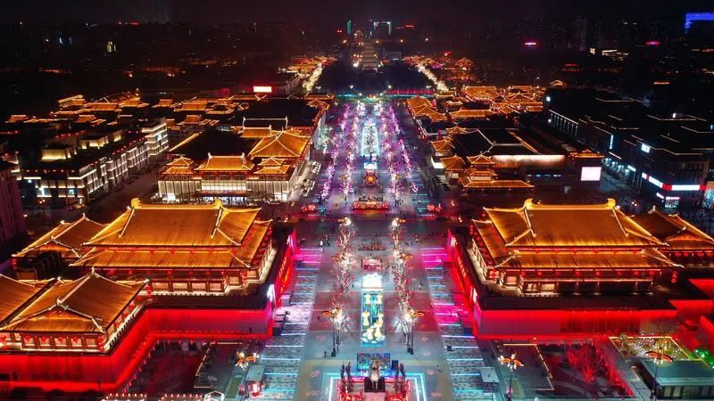

复工的日子里，生活习惯已被悄然改变
原文链接 备份链接 复工第一天，我的自行车被偷了，证明各行各业确实都开始复工了。 复工第二天，我惊喜地接到了骚扰电话，说明人们的精神需求在不断恢复。 经历一个超长的假期，不少人重新回到了工作岗位，虽然和一个月前相比还是去一样的地点，做一样 …

他们都有着细碎的烦恼、担忧、庆幸与反思
疫情如洪水涌来，没有人能全身而退。
何时能完全恢复正常是大家都关心的问题。解封复工的消息不断传来，公园的花开了，路上的车多了起来，城市复活了。有人回归车间和工位，更多人早已开始远程办公。
但一些行业受到重创，一时难以缓过来。
首当其冲的是第三产业。电影、餐饮、旅游文娱、教育培训、金融服务、房地产、体育行业、交通运输业……管中窥豹，经济学家任泽平团队的研究数据显示，仅春节七天，全国电影票房损失70亿，餐饮零售损失5000亿，旅游市场损失5000亿，三者总额超1万亿，占2019年一季度GDP21.8万亿的4.6%。
庞大的数据背后是无数个具体的个人。
近日，中国新闻周刊采访了4位受疫情影响，仍然不能复工的普通人。他们的生活境遇、经济水平、所处行业与地域都不同，但相比起大企业的大悲大喜，他们都有着细碎的烦恼、担忧、庆幸与反思，在生活压力下自我调侃“不能躺着赚钱反而要躺着花钱”。
冯兽兽，北京，培训机构老师
刚接到我的直属领导打来的语音电话时，我是很激动的。
今天（3月1日）下午她跟我说要开电话会议，安排日后的工作。我很高兴，哇，终于要复工了！结果等到傍晚6点，她跟我说受疫情影响，北京要求所有教育培训机构线下培训最早在4月底才能开始复工。这两个月公司也没有收入，所以期间工资停发，社保也停缴，我的工资发到2月份。
我所在的公司很小，有留学、教育、培训三大块。我们没有很广的线上渠道，主要做线下培训。我是老师，教成人托福、雅思类基础英语。
1月29号，我从洛阳老家来北京。疫情严重，我戴着爸妈给的墨镜、帽子和一次性医用手套，还准备了酒精。当时大家是挤着来的，高铁座位还没排开。
当天上高铁前我还问领导是否推迟上班，她说没收到通知。年初七，我没收到延期复工的通知，就跑去办公室了。结果没见到有人。同楼层另一家培训机构好落寞啊，只有校长一个人在里面。
领导一直没给我们准确的说法。以后我还扑空过几次，每个周一我都在准备着去上班。
我回北京一个多月了。前两周我还做了线上课程，后来线上课渠道合作到期了，就让我做留学咨询以及整资料等很繁琐的工作。
这一个多月我就买菜做饭，哪里都不敢去，我就怕哪一天叫我去工作。

冯兽兽2月7日外出买菜时拍下的街景 图/受访者提供
我们这个行业，老师们大都在家复工，所有的线下课程变成线上的。但线上课是有限的，线上平台少，供应不足，课程也没法排开。所以很多线下课，尤其是一个人几千块课时费的大班课也被取消了。海淀这边有很多像我们这种主攻线下的培训机构。
领导在电话里跟我说，“你们可以去找工作，我们不怪你，但复工了也欢迎你们回来”。我毫无防备，不敢相信，一时不知所措。她还说有什么困难可以找她，没钱能找你吗？！
我之前没有过这种经历，我是去年毕业的，没有什么储蓄。在北京生活有高额的费用，一个月房租生活费起码要5000块，更别说在海淀。疫情期间难找工作，也不知道该怎么办。
我当时第一反应是该不该和家人讲，我要不要离开北京。晚上我妈还给我打电话问我工作怎么样，但我不敢跟我妈说。我家里人也没有复工，全家都没有收入。
邱秋，广东某四线城市，化妆师
精神都要崩溃了，想出去又不敢。
时间过得太快了，好像还没睡醒又到天黑了。我现在在家每天吃饱了就睡，有时睡到中午一点才起，起来看手机追剧，无聊了就开始煮饭，再无聊的时候搞卫生，一条缝隙都不放过。没事就抠手指甲，拔开叉的头发，该不该拔的都拔了。
总是会想出去走走，想工作。我们这个行业复工可能要到四五月份，到夏天才行了。从2月开始，我周围没有一个化妆师上班了。
这半年都没法挣钱，反而还要花钱。今天晚上我去超市买了一些零食、鸡蛋、牛奶还有几个火龙果，花了我一百五十块大洋，钱不耐用啊。
之前过年是很忙的。一二月份是旺季，因为节日比较多，还有情人节。我之前工作的美甲店在步行街，一直到晚上10点才统一关门，年三十、初一初二都要上班。有多少个客人？那就数不清咯，单是做指甲我一个人每天要做10个左右，有的款式复杂要做2小时左右。
去年11月开始，我和一个星级酒店合作，给酒店的二三十个沐足技师化妆。每天只需要去4个小时，剩下的时间我去之前的美甲店兼职，也去影楼、工作室，还给淘宝平面模特化妆。
但受疫情影响，年三十酒店就空了一半人左右。本来年初一叫我回去上班的，后来市里出了通知暂停全市文化体育娱乐场所经营活动，一直到现在，我就等在家里。
一开始1月底还有些同行在上班，后来越来越严重，2月开始慢慢的全都不干了。我加的化妆群，到现在没有一个需求，叫人帮忙啊顶班啊都没有，一个都没有。
我工作10年，做化妆师4年，没放过这么长的假。
幸好我老公还在上班，要不然就吃老本了。本来打算今年要存下钱的，之前有过这两年生小孩的想法，生完小孩后可以开一家自己的店。但现在也说不定。我也喜欢干这个，就等复工吧。
夏昊燕，上海，餐馆老板
我比较乐观。
我做餐饮13年了，在很多地方待过，但以前都是给别人做。现在我在上海市奉贤区南桥镇开了一家小餐馆，主营馄饨，和沙县小吃差不多。店不大，只有30平方（米）。是2018年6月2号开业的，我和朋友一起投资。目前除了我们两个老板还有一个店员。
我自己也是收银员、厨师，还是外卖员。年底骑手少，近的话就自己送了。有时候无聊也送别人家的外卖，赚外快。
店里早上5点半开门，到第二天凌晨3点多才关门。我们3个人轮着来，早去的早走。但我不觉得累，都是手上的活，为自己做，有冲劲。最累的时候就是没生意的时候。
每年下半年是旺季，尤其是放暑假的时候。年初是淡季，尤其赶上疫情，现在是零收入，但租金、电费都要出。房租一年6万，5月份交今年的房租，不知道能否降一点。
我们正常是初八开工的。我年初四就从老家来到浙江这边一个朋友家，原本打算玩三天，但没想到疫情严重，困在了这里。什么时候复工也不确定，到了上海还要居家隔离14天。
我估计三月下旬才能营业，到时也只能做外卖，不让吃堂食，估计会比以往收入下降9成。
我相信肯定会有点外卖的，自己做好防控就行。我提前网购了好多重新营业要用的东西，最近快递都到了。
张风，陕西西安，导游
我认识的导游全都没有营业。
旅游业每年冬天属于淡季，我1月只接了一个活。旅行社的老板损失会更大一点，他们有销售、财务等，得养着。
对我而言最大的影响是我胖了10斤，还没钱。朋友圈里很多人在做微商，还有些老导游在抖音做直播。
我房租是正常交的，房东人很好，住进去几年都没涨过房租。可惜我错过了西安买房的黄金期，因为一直在纠结，毕竟房贷压力大。我们工种特殊，拿钱是现结的。像我这种今天赚了300块，我要花200到250块的人，攒的是小头。更别说很多90后、00后是月光族。
但疫情对整个旅游业的影响是巨大的。有新闻报道说本次疫情对旅游行业的影响最为严重，全国旅游业预计今年损失接近3万亿元。这不算夸张，可能最终的数字比这还大。旅游行业属于第三产业，有吃、住、行、游、购、娱六大要素，要解决的就业范围是很广的。

今年“二月二”当天的西安大唐不夜城 图/陕西省文化和旅游厅官网
腊月二十八，我们团队就取消了。我们正常是过年不放假，高峰期在初二到初六之间，每天都会很忙，基本不会闲下来。有一天我早上7点就带客人出门，到晚上12点才回家。过年旅游人多，前年大年初四左右，我收工后晚上打了辆出租回家，师傅听我说的是陕西话，跟我说“你是这几天我拉的唯一一个本地人”。
我家在镇上开了一家宾馆，每年按法定节假日正常放假。今年到现在还没营业。对家里肯定是有影响的，突然间没有收入了。
旅行社目前的坐班人员已经上班了，但导游没游客去干嘛呢。我们行业全国大面积复工的话得到下半年，比如你平时爱去的某家饭店确诊了一例，但后续没有报道了，我就问你，你还敢去吗？况且疫情过后大家收入减少，谁还愿意出去呢？
西安的景点目前好些都没开。我主要带省内游，其中一半游客是研学旅行的家庭游。正常上课期间，开学，期末，3月，11月，家长会请年假带着娃逛，属于课程的一部分。但学生到现在都没开学，娃的家长也受影响，还能像之前那么大方拿钱带娃出门吗？
即使恢复正常了，我对西安旅游业也有担忧。大雁塔外面都没有大巴车停车场，西安市路上划了禁停标志，小酒店门口没法停车。光是对旅游车停车这件事上，市上和省上文件都不同。在这样的背景下，不知道西安旅游受疫情冲击后会怎么样。
家里人目前建议我改行，但我想再看看。
（应受访者要求，文章人物皆为化名）
值班编辑：俞杨
推荐阅读
▼


原文链接 备份链接 复工第一天，我的自行车被偷了，证明各行各业确实都开始复工了。 复工第二天，我惊喜地接到了骚扰电话，说明人们的精神需求在不断恢复。 经历一个超长的假期，不少人重新回到了工作岗位，虽然和一个月前相比还是去一样的地点，做一样 …
原文链接 备份链接 _ “不知道那些曾经一起抢出站闸机的人，现在正在遭遇什么？只希望这场疫情早点儿过去。” _ 文 |《财经》记者 王丽娜 袁满 编辑 | 朱弢 疫情之下，每个人的生活都有变化。即便是距离疫情爆发中心武汉千里之外的北京。 …
原文链接 备份链接 _ “不知道那些曾经一起抢出站闸机的人，现在正在遭遇什么？只希望这场疫情早点儿过去。” _ 文 |《财经》记者 王丽娜 袁满 编辑 | 朱弢 疫情之下，每个人的生活都有变化。即便是距离疫情爆发中心武汉千里之外的北京。 …
原文链接 备份链接 多年以后，理发师高为谋如果还在干这行，准会想起2020年春天这个特殊的二月二。这一天，他打工的理发店仍旧闭着门，座椅上落满灰，彩虹灯也不亮了，打开微博，呼唤“Tony老师”的声音遍地都是。 而他，正在南京的街头送外卖。 …
原文链接 备份链接 温州抗疫的“小目标”在变：1月29日是“奋战十天、拿下拐点”；如今是“力争到3月10日，企业复工率、产能恢复率达100%”。 文 | 《财经》记者 王静仪 编辑 | 施智梁 2月初将浙江省温州“小汤山”医院从无到有准 …